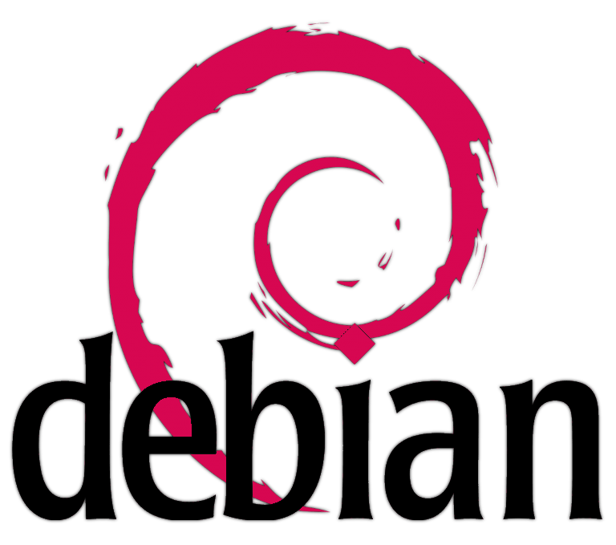
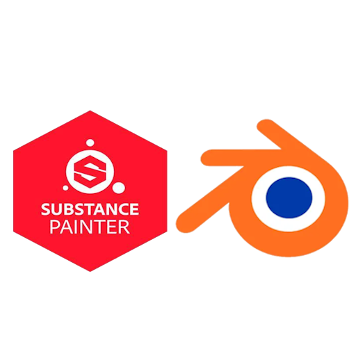

SAE4.01
Infrastructure d'un réseau virtuel
Introduction et mise en contexte
Ce projet a pour but la conception et la mise en œuvre d’une infrastructure réseau
documentée permettant d’accueillir les postes de travail "utilisateur" et "administrateur"
d’une banque avec un certain nombre de services sécurisés à l’aide d’outils open-source.
Nous avions décidé de commencer par l’infrastructure améliorée pour par la suite arriver
à une réalisation stable et exhaustive.Au final, nous avons terminé l’infrastructure avancée
et avons implémenté une partie des services de l’infrastructure avancée (DoT, DoH, serveur
de supervision du réseau sous Nagios Core, Annuraire LDAP).
Rappel Architecture envisagée et plan d’adressage
L’architecture a été adaptée et modifiée pour ne comporter qu’un seul routeur pour le
niveau amélioré, nous facilitant ainsi l’implémentation de l’architecture.
Les VLANs présents précédemment ont été changés pour des sous réseaux, sachant qu’il n’est pas possible d’émuler
des VLANs au sein de libvirt (ou très compliqué).
Dans la version finale nous avons rajouté de nouvelles machines telles qu’un serveur LDAP, un serveur NFS,un serveur de supervision
du réseau utilisant NagiosCore ou encore un serveur de log.
cf l’annexe 1 : Schéma de l’architecture réseau et plan d’adressage au début du projet / final.
Récapitulatif des ressources matérielles utilisées
Ce deuxième tableau regroupe les serveurs qui implémentent les services suivant : DNS,
DHCP, Nagios, NFS, serveur de logs, serveur LDAP, Base de données MariaDB.
Ressources qui alimentent ce projet
Les ressources utilisées pour ce projet sont :
• R3.07 [Informatique : SQL dans un langage de programmation]
Elle comprend mes connaissances sur le langage de programmation SQL et sur le SGBD postgreSQL.
Ainsi que des connaissances sur l'administration d'une base de données.
• R3.01 [Informatique : Développement web]
Elle comprend mes connaissances sur les langages de programmation Web (HTML, Css, Js, PHP).
• R3.06 [Informatique : Architecture des réseaux]
Elle comprend mes connaissances sur l'infrastructure d'un réseau et ses bases(protocoles, IP, ICMP, UDP, TCP etc.).
• R3.13 [Communication professionnelle]
Elle comprend nos méthodes de communication lors d'un contexte projet/professionnel.
Mes compétences acquises
À la fin de ce projet, j'ai acquis différentes compétences :
• Administrer une base de données
• Déployer une application communicante dans un réseaux (raspberry).
• Conceptualiser & Réaliser un plan d'infrastructure réseau
• Mise en place & sécurisation de différents services au sein d'un réseau (DHCP, LDAP, etc...)
• Sécuriser un serveur web (SSL, SSH).
Mes autres projets


SAE 1.03
SAE 1.03
Installation d’un poste de développement



Blender